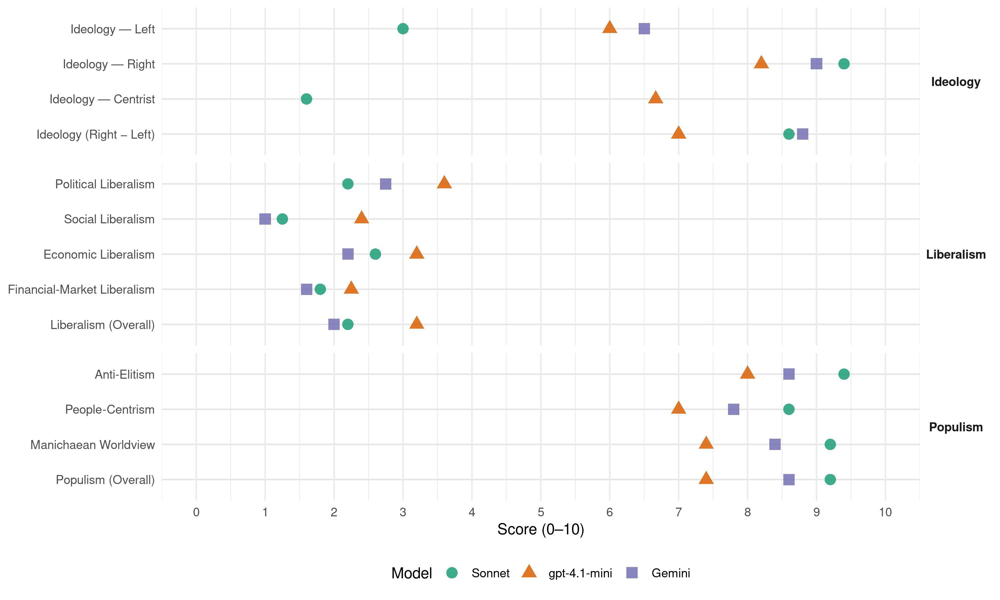

(Hungary, 2022)
manifesto_id 86711_202204
Get full text: This site shows derived annotations and short verbatim quotes only. The full manifesto text is © Manifesto Project / WZB — obtain it via manifesto-project.wzb.eu using the manifesto_id above.
Headline scores
| Dimension | Sonnet | gpt-4.1-mini | Gemini |
|---|---|---|---|
| Populism (Overall) | 9.2 | 7.4 | 8.6 |
| Anti-Elitism | 9.4 | 8.0 | 8.6 |
| People-Centrism | 8.6 | 7.0 | 7.8 |
| Manichaean Worldview | 9.2 | 7.4 | 8.4 |
| Ideology (Right − Left) | 8.6 | 7.0 | 8.8 |
| Liberalism (Overall) | 2.2 | 3.2 | 2.0 |
| Political Liberalism | 2.2 | 3.6 | 2.8 |
| Social Liberalism | 1.2 | 2.4 | 1.0 |
| Economic Liberalism | 2.6 | 3.2 | 2.2 |
| Financial-Market Liberalism | 1.8 | 2.2 | 1.6 |
Evidence per dimension
Economic Liberalism
Gemini · score 2.0 · verified · chunk 1
“multik és a bankok uralma helyett végre a kormány a magyar vállalkozásokat támogassa”
nemzetgazdaságot újra megteremtsük, hogy a multik és a bankok uralma helyett végre a kormány a magyar vállalkozásokat támogassa kiemelten, hogy ismét
Gemini · score 2.0 · verified · chunk 2
“nem szabad félnünk az állami beavatkozástól sem”
nagyon komoly tervet kell készítenünk, és nem szabad félnünk az állami beavatkozástól sem addig, ameddig berúgjuk a motort.
Gemini · score 3.0 · verified · chunk 3
“külföldi tulajdonú, multinacionális nagytőke”
szinte gyarmati sorba került: alacsony munkabérek, külföldi tulajdonú, multinacionális nagytőke, illetve magyar politikaközeli
Gemini · score 2.0 · verified · chunk 4
“multinacionális nagytőke, illetve magyar politikaközeli”
alacsony munkabérek, külföldi tulajdonú, multinacionális nagytőke, illetve magyar politikaközeli oligarchák határozzák meg a gazdasági
Gemini · score 2.0 · verified · chunk 5
“multinacionális cégeket köteleznénk a szakszervezeti”
A multinacionális cégeket köteleznénk a szakszervezeti rendszer kiépítésének támogatására.
gpt-4.1-mini · score 3.0 · verified · chunk 1
“a magyar kis- és középvállalkozásokat, a dolgozókat, a magyar gazdákat támogatná”
A Mi Hazánk az egyetlen politikai erő, amely a dúsgazdag multik helyett a magyar kis- és középvállalkozásokat, a dolgozókat, a magyar gazdákat támogatná kiemelten.
gpt-4.1-mini · score 3.0 · verified · chunk 2
“a mezőgazdaságot, és elhitették az országgal, hogy ezt az ágazatot nem lehet versenyképesen, jövedelmezően működtetni”
Az elmúlt harminc évben azonban a politika, a kormányok tudatosan leépítették a mezőgazdaságot, és elhitették az országgal, hogy ezt az ágazatot nem lehet versenyképesen, jövedelmezően működtetni. Ez azonban a legnagyobb hazugság, hiszen a Föld lakossága folyamatosan, robbanásszerűen nő, a távolságok pedig lecsökkentek, mindenki számára elérhetővé vált a globális kereskedelem; a világ bármelyik pontja könnyen elérhetővé vált, a világhálón bármit meg lehet rendelni egy másik kontinensről, s pár napon belül itt is van az áru.
gpt-4.1-mini · score 3.0 · verified · chunk 3
“Hazánk az elmúlt harminc év globalista-liberális szellemű gazdaságpolitikájának következtében szinte gyarmati sorba került: alacsony munkabérek, külföldi tulajdonú, multinacionális nagytőke”
Hazánk az elmúlt harminc év globalista-liberális szellemű gazdaságpolitikájának következtében szinte gyarmati sorba került: alacsony munkabérek, külföldi tulajdonú, multinacionális nagytőke, illetve magyar politikaközeli oligarchák határozzák meg a gazdasági folyamatokat ahelyett, hogy a természeti adottságainkra építő, magas hozzáadott értékkel bíró termékeket állítanánk elő, amelyek így magasabb bérek fizetését is lehetővé tennék.
gpt-4.1-mini · score 4.0 · verified · chunk 4
“a minimálbér adóterhelése a legnagyobb mértékű az Európai Unióban”
A minimálbér adóterhelése a legnagyobb mértékű az Európai Unióban, továbbá a munkavállalókat és a munkáltatókat terhelő adók és járulékok tekintetében Magyarország szintén az élbolyba tartozik.
gpt-4.1-mini · score 3.0 · verified · chunk 5
“a munka törvénykönyvének megalkotása során a kormány sokkal inkább figyelembe vette a multinacionális cégek érdekeit”
…A munka törvénykönyvének megalkotása során a kormány sokkal inkább figyelembe vette a multinacionális cégek érdekeit, mint a magyar munkavállalókét…
Sonnet · score 2.0 · verified · chunk 1
“állami erővel avatkozna be a magyar vállalkozások”
A Mi Hazánk az egyetlen politikai erő, amely állami erővel avatkozna be a magyar vállalkozások és dolgozók érdekében, hogy versenyképessé tegye őket a multikkal szemben.
Sonnet · score 2.0 · verified · chunk 2
“állami beavatkozástól sem”
nem szabad félnünk az állami beavatkozástól sem addig, ameddig berúgjuk a motort
Sonnet · score 3.0 · verified · chunk 3
“globalista-liberális szellemű gazdaságpolitikájának következtében”
Hazánk az elmúlt harminc év globalista-liberális szellemű gazdaságpolitikájának következtében szinte gyarmati sorba került
Sonnet · score 2.0 · verified · chunk 4
“bevezetjük a többkulcsos személyijövedelemadó-rendszert”
Az igazságosabb közteherviselés érdekében bevezetjük a többkulcsos személyijövedelemadó-rendszert
Sonnet · score 4.0 · verified · chunk 5
“csökkenteni kell a bér jellegű költségeket”
A foglalkoztatottság növelése érdekében csökkenteni kell a bér jellegű költségeket (a munkáltatót terhelő, béralapú elvonások mérséklésével)
Financial-Market Liberalism
Gemini · score 1.0 · verified · chunk 1
“multik és a bankok uralma helyett végre a kormány a magyar vállalkozásokat támogassa”
nemzetgazdaságot újra megteremtsük, hogy a multik és a bankok uralma helyett végre a kormány a magyar vállalkozásokat támogassa kiemelten, hogy ismét
Gemini · score 1.0 · verified · chunk 2
“világot uraló, nemzetközi pénzügyi körök befolyásától”
egy magyar közösségi hálózat létrehozása, amely mentes a világot uraló, nemzetközi pénzügyi körök befolyásától, de ugyanúgy nem tud
Gemini · score 2.0 · verified · chunk 3
“meg kell határozni azt a kamatmértéket”
Tiltsuk be az uzsorázást! A pénzügyi visszaélések megakadályozása érdekében meg kell határozni azt a kamatmértéket, amelyen felül a követelés
Gemini · score 2.0 · verified · chunk 4
“nemzetközi pénzügyi körök, valamint a”
kialakult az adósság-rabszolgaság, és a nemzetközi pénzügyi körök, valamint a multik uralják a magyarországi gazdaságot
Gemini · score 2.0 · verified · chunk 5
“legkedvezőbb hozamú államkötvényben garantált kamatmértékkel”
naptári évben kibocsájtott, a legkedvezőbb hozamú államkötvényben garantált kamatmértékkel növelt nyugdíjelőleg-rendszerré.
gpt-4.1-mini · score 2.0 · verified · chunk 1
“állami támogatást adott egyedi kormánydöntések alapján a kormány”
2020-ban pedig 27, jellemzően multinacionális nagyvállalatnak összesen 67,1 milliárd forint állami támogatást adott egyedi kormánydöntések alapján a kormány.
gpt-4.1-mini · score 2.0 · verified · chunk 2
“a Világgazdasági Fórumhoz több szálon is kötődő globalista dollármilliárdosok, mint például az amerikai Bill Gates és a kínai Jack Ma”
Számos szakember, sőt még az amerikai hírszerzés is azt valószínűsítette, hogy az úgynevezett új koronavírus (SARS-Cov-2) laboratóriumi eredetű. Az is tény, hogy az óriási üzletnek számító vakcinagyártás mögött olyan üzletemberek állnak, akik a Világgazdasági Fórumhoz több szálon is kötődő globalista dollármilliárdosok, mint például az amerikai Bill Gates és a kínai Jack Ma, így aztán jogosan merülhet fel az a kérdés, hogy vajon a koronavírus, a pandémia és a világszerte alkalmazott Covid-protokoll nem része-e egy előre eltervezett gazdasági, politikai folyamatnak?
gpt-4.1-mini · score 2.0 · verified · chunk 3
“a nemzetközi pénzügyi körök, valamint a multik uralják a magyarországi gazdaságot.”
Ez az oka annak, hogy Magyarország szinte tehetetlenül sodródik jelenleg is, amikor a koronavírus (pontosabban a koronavírusra hivatkozó új világrend, a Great Reset) miatt világszerte elszabadult az infláció. 2021-ben a 2008-as pénzügyi válság óta nem látott szintre emelkedett a globális infláció, ami átlagosan minimum 5% körül lehet. Ezzel egy időben brutálisan megugrott a magyar államadósság is. A koronavírus miatti elhibázott gazdasági intézkedések, a lezárások okozta gazdasági leállások miatti termelés-visszaesés ellentételezésére költekezéssel reagált a kormány. Ennek következtében már 2021-ben átlépte az államadósság GDP- arányos szintje a lélektani 80%-os szintet. Az államadósság ezzel a kilencvenes évek tragikus szintjére nőtt, amely után a Bokros-féle megszorító csomag jött, de semmivé vált az elmúlt tíz év államadósság-csökkentő ígérete is, hiszen jelenleg a Gyurcsány-kormány pusztítása utáni katasztrofális, államcsődöt hozó államadóssági szint környékén járunk. Mindez azért is vérlázító, mert a Fidesz-kormány annak idején a magánnyugdíjpénztári vagyon államosítását azzal indokolta, hogy annak a célja az államadósság csökkentése. Ezzel szemben a magyar emberek vagyonának államosítását követően Magyarország államadóssága a GDP arányában alig csökkent, mára pedig a koronavírus-lezárások miatt visszajutottunk a korábbi tragikus, államcsődközeli szintre. Ráadásul a magyar állam újra devizában is eladósodik, 2021 szeptemberében az Orbán-kormány ugyanis minden idők legnagyobb egynapi új adósságkibocsátását hajtotta végre, mai árfolyamon 1258 milliárd forint adósságot keletkeztetett egyetlen nap alatt.
gpt-4.1-mini · score 3.0 · verified · chunk 4
“a Magyar Nemzeti Banknak (MNB) valóban a magyar érdekeket, s nem egy szűk nemzetközi és hazai pénzügyi elit érdekeit kell képviselnie”
Fontosnak tartjuk, hogy pénzintézeteink hazai kézbe kerüljenek, valamint a helyi pénzek létrejöjjenek, lokális fizetési rendszerek épüljenek ki, amelyek a helyi gazdaságot és kereskedelmet erősítenék, s amellyel a spekulációs és manipulatív pénzügyi folyamatok hatása alól fokozatosan kivonhatjuk gazdaságunkat. A Magyar Nemzeti Banknak (MNB) valóban a magyar érdekeket, s nem egy szűk nemzetközi és hazai pénzügyi elit érdekeit kell képviselnie!
Sonnet · score 2.0 · verified · chunk 1
“bankárok további támogatása helyett”
valódi magyar nemzetgazdaságot építene a globális óriáscégek és bankárok további támogatása helyett
Sonnet · score 1.0 · verified · chunk 2
“devizahitelezés bűncselekmény volt”
Álláspontunk szerint a devizahitelezés bűncselekmény volt, a devizakárosultak ügyeiben fel kell függeszteni a végrehajthatóságot, a kár teljes mértékét bankadó jogcímén át kell hárítani az érintett bankokra
Sonnet · score 2.0 · verified · chunk 3
“kamatmértéket, amelyen felül a követelés”
A pénzügyi visszaélések megakadályozása érdekében meg kell határozni azt a kamatmértéket, amelyen felül a követelés a magyar bíróság előtt peresíthetetlen
Sonnet · score 1.0 · verified · chunk 4
“pénzintézeteink hazai kézbe kerüljenek”
fontosnak tartjuk, hogy pénzintézeteink hazai kézbe kerüljenek, valamint a helyi pénzek létrejöjjenek, lokális fizetési rendszerek épüljenek ki
Sonnet · score 3.0 · verified · chunk 5
“tőkefedezeti nyugdíjrendszerre”
felosztó-kirovó” nyugdíjrendszerről állami garanciával át kell állni a tőkefedezeti nyugdíjrendszerre
Political Liberalism
Gemini · score 3.0 · verified · chunk 1
“közpénzből támogatott közmédia nem szolgálhatja kizárólag az aktuális kormány érdekeit”
új médiatörvényre van szükség, amely kimondja, hogy a média önálló hatalmi ág, ezért nem lehet médium külföldi kézben, valamint amely biztosítja, hogy a közpénzből támogatott közmédia nem szolgálhatja kizárólag az aktuális kormány érdekeit. Ugyanakkor manapság
Gemini · score 3.0 · mixed · chunk 2
“Mi Hazánk kiáll a szólás- és gondolatszabadság mellett”
Kiegyensúlyozott tájékoztatást! A Mi Hazánk kiáll a szólás- és gondolatszabadság mellett, szükségesnek tartja a kiegyensúlyozottság megteremtését
Gemini · score 2.0 · verified · chunk 3
“megszüntetni azt a liberális gyakorlatot”
Rendkívül fontos, hogy visszaállítsuk a rendfenntartó erők tekintélyét. Meg kell szüntetni azt a liberális gyakorlatot, amely az elmúlt harminc
Gemini · score 3.0 · verified · chunk 4
“Országgyűlésnek teljeskörűen és szigorúan gyakorolnia”
az Országgyűlésnek teljeskörűen és szigorúan gyakorolnia kell a törvényben is előírt felügyeleti
Gemini · score 3.0 · verified · chunk 5
“választási program készítését és a miniszterelnök-jelölti”
minden pártnak kötelezővé tennénk a választási program készítését és a miniszterelnök-jelölti vita vállalását.
gpt-4.1-mini · score 3.0 · verified · chunk 1
“a közmédia ma is a kormánypártok érdekeit szolgálja ki”
2006-ban a Magyar Televízió székházát is azért foglalták el szimbolikusan a tüntető hazafiak, mert a közmédia hazudott, és az éppen regnáló hatalmat szolgálta ki. A helyzet ma is így van: a közmédia ma is a kormánypártok érdekeit szolgálja ki, és nem nagyon közölhetnek olyan hírt vagy véleményt, amely kritikus vagy ellentétes a kormány álláspontjával vagy érdekével.
gpt-4.1-mini · score 3.0 · verified · chunk 2
“a közmédiának az egész országot, az egész nemzetet kellene szolgálnia, ezért új médiatörvényre van szükség”
A helyzet ma is így van: a közmédia ma is a kormánypártok érdekeit szolgálja ki, és nem nagyon közölhetnek olyan hírt vagy véleményt, amely kritikus vagy ellentétes a kormány álláspontjával vagy érdekével. Rendkívül fontos, hogy a közmédiának az egész országot, az egész nemzetet kellene szolgálnia, ezért új médiatörvényre van szükség, amely kimondja, hogy a média önálló hatalmi ág, ezért nem lehet médium külföldi kézben, valamint amely biztosítja, hogy a közpénzből támogatott közmédia nem szolgálhatja kizárólag az aktuális kormány érdekeit.
gpt-4.1-mini · score 3.0 · verified · chunk 3
“A teljes és általános vallásszabadságot, a jogegyenlőséget, a sajtó- és véleményszabadságot a teljes lakosság, beleértve a nemzetiségeket is, maradéktalanul élvezhette.”
Érintett szomszédjainkat, valamint a nemzetközi közösséget folyamatosan emlékeztetjük, hogy a Szent Koronához tartozó országrészekben élő kisebbségek nem voltak elnyomásnak, kizsákmányolásnak kitéve. A történelmi Magyarország egésze dinamikusan fejlődött, az elcsatolt részeken korábban – az ország többi részéhez hasonlóan – megteremtettük az infrastruktúrát, ápoltuk a kultúrát, fejlett iskola- és közigazgatási intézményrendszert építettünk ki. A teljes és általános vallásszabadságot, a jogegyenlőséget, a sajtó- és véleményszabadságot a teljes lakosság, beleértve a nemzetiségeket is, maradéktalanul élvezhette.
gpt-4.1-mini · score 5.0 · verified · chunk 4
“az Országgyűlésnek teljeskörűen és szigorúan gyakorolnia kell a törvényben is előírt felügyeleti és beszámoltatási jogait”
Az MNB működése jelenleg nem elég átlátható, ezen változtatni fogunk, az Országgyűlésnek teljeskörűen és szigorúan gyakorolnia kell a törvényben is előírt felügyeleti és beszámoltatási jogait.
gpt-4.1-mini · score 4.0 · verified · chunk 5
“a politika és a közbeszéd színvonala romlik, egyre kevésbé szól az emberek mindennapjait érintő javaslatokról”
…A politika és a közbeszéd színvonala romlik, egyre kevésbé szól az emberek mindennapjait érintő javaslatokról, sokkal inkább a személyeskedő sárdobálás a jellemző…
Sonnet · score 2.0 · verified · chunk 1
“közmédia nem szolgálhatja kizárólag az aktuális kormány”
amely kimondja, hogy a média önálló hatalmi ág, ezért nem lehet médium külföldi kézben, valamint amely biztosítja, hogy a közpénzből támogatott közmédia nem szolgálhatja kizárólag az aktuális kormány érdekeit.
Sonnet · score 2.0 · verified · chunk 2
“média önálló hatalmi ág”
új médiatörvényre van szükség, amely kimondja, hogy a média önálló hatalmi ág, ezért nem lehet médium külföldi kézben
Sonnet · score 1.0 · verified · chunk 3
“strasbourgi bíróság joghatósága alóli kivonásra”
A Mi Hazánk szerint a magyar börtönviszonyok valóban méltatlanok: méltatlanul jók ahhoz képest, amilyet a politikusbűnözők érdemelnének. A strasbourgi bíróság joghatósága alóli kivonásra szükség van
Sonnet · score 3.0 · verified · chunk 4
“Országgyűlésnek teljeskörűen és szigorúan gyakorolnia kell”
az Országgyűlésnek teljeskörűen és szigorúan gyakorolnia kell a törvényben is előírt felügyeleti és beszámoltatási jogait
Sonnet · score 3.0 · verified · chunk 5
“demagóg kormánypropagandát”
közpénzből, milliárdokból folytatnak demagóg kormánypropagandát. A Mi Hazánk Mozgalom ezeken is változtatni szeretne
Liberalism (Overall)
Gemini · score 2.0 · verified · chunk 1
“multik és a bankok uralma helyett végre a kormány a magyar vállalkozásokat támogassa”
nemzetgazdaságot újra megteremtsük, hogy a multik és a bankok uralma helyett végre a kormány a magyar vállalkozásokat támogassa kiemelten, hogy ismét
Gemini · score 2.0 · verified · chunk 2
“nem szabad félnünk az állami beavatkozástól sem”
nagyon komoly tervet kell készítenünk, és nem szabad félnünk az állami beavatkozástól sem addig, ameddig berúgjuk a motort.
Gemini · score 2.0 · verified · chunk 3
“megszüntetni azt a liberális gyakorlatot”
Rendkívül fontos, hogy visszaállítsuk a rendfenntartó erők tekintélyét. Meg kell szüntetni azt a liberális gyakorlatot, amely az elmúlt harminc
Gemini · score 2.0 · verified · chunk 4
“LMBTQP-propagandát tartalmazó alkotást állami”
kizárjuk, hogy bármilyen, LMBTQP-propagandát tartalmazó alkotást állami pénzzel támogassunk, ahogy tette azt
Gemini · score 2.0 · verified · chunk 5
“multinacionális cégeket köteleznénk a szakszervezeti”
A multinacionális cégeket köteleznénk a szakszervezeti rendszer kiépítésének támogatására.
gpt-4.1-mini · score 3.0 · verified · chunk 1
“a közmédia ma is a kormánypártok érdekeit szolgálja ki”
2006-ban a Magyar Televízió székházát is azért foglalták el szimbolikusan a tüntető hazafiak, mert a közmédia hazudott, és az éppen regnáló hatalmat szolgálta ki. A helyzet ma is így van: a közmédia ma is a kormánypártok érdekeit szolgálja ki, és nem nagyon közölhetnek olyan hírt vagy véleményt, amely kritikus vagy ellentétes a kormány álláspontjával vagy érdekével.
gpt-4.1-mini · score 3.0 · verified · chunk 2
“a közmédiának az egész országot, az egész nemzetet kellene szolgálnia, ezért új médiatörvényre van szükség”
A helyzet ma is így van: a közmédia ma is a kormánypártok érdekeit szolgálja ki, és nem nagyon közölhetnek olyan hírt vagy véleményt, amely kritikus vagy ellentétes a kormány álláspontjával vagy érdekével. Rendkívül fontos, hogy a közmédiának az egész országot, az egész nemzetet kellene szolgálnia, ezért új médiatörvényre van szükség, amely kimondja, hogy a média önálló hatalmi ág, ezért nem lehet médium külföldi kézben, valamint amely biztosítja, hogy a közpénzből támogatott közmédia nem szolgálhatja kizárólag az aktuális kormány érdekeit.
gpt-4.1-mini · score 3.0 · verified · chunk 3
“A teljes és általános vallásszabadságot, a jogegyenlőséget, a sajtó- és véleményszabadságot a teljes lakosság, beleértve a nemzetiségeket is, maradéktalanul élvezhette.”
Érintett szomszédjainkat, valamint a nemzetközi közösséget folyamatosan emlékeztetjük, hogy a Szent Koronához tartozó országrészekben élő kisebbségek nem voltak elnyomásnak, kizsákmányolásnak kitéve. A történelmi Magyarország egésze dinamikusan fejlődött, az elcsatolt részeken korábban – az ország többi részéhez hasonlóan – megteremtettük az infrastruktúrát, ápoltuk a kultúrát, fejlett iskola- és közigazgatási intézményrendszert építettünk ki. A teljes és általános vallásszabadságot, a jogegyenlőséget, a sajtó- és véleményszabadságot a teljes lakosság, beleértve a nemzetiségeket is, maradéktalanul élvezhette.
gpt-4.1-mini · score 4.0 · verified · chunk 4
“a minimálbér adóterhelése a legnagyobb mértékű az Európai Unióban”
A minimálbér adóterhelése a legnagyobb mértékű az Európai Unióban, továbbá a munkavállalókat és a munkáltatókat terhelő adók és járulékok tekintetében Magyarország szintén az élbolyba tartozik.
gpt-4.1-mini · score 3.0 · verified · chunk 5
“a munka törvénykönyvének megalkotása során a kormány sokkal inkább figyelembe vette a multinacionális cégek érdekeit”
…A munka törvénykönyvének megalkotása során a kormány sokkal inkább figyelembe vette a multinacionális cégek érdekeit, mint a magyar munkavállalókét…
Sonnet · score 2.0 · verified · chunk 1
“szólás- és gondolatszabadság mellett”
A Mi Hazánk kiáll a szólás- és gondolatszabadság mellett, szükségesnek tartja a kiegyensúlyozottság megteremtését mind az írott, mind az elektronikus sajtóban.
Sonnet · score 2.0 · verified · chunk 2
“liberális véleménydiktatúra”
a liberális véleménydiktatúra a büntetőpolitikában és a rendvédelemben is megjelent, és óriási pusztítást végzett
Sonnet · score 2.0 · verified · chunk 3
“természetellenes elméleteket kívánják ránk kényszeríteni”
Visszautasítjuk azokat a nemzeti-keresztény kultúránk megváltoztatására és felhígítására irányuló támadásokat, próbálkozásokat, amelyek a különféle természetellenes elméleteket kívánják ránk kényszeríteni
Sonnet · score 2.0 · verified · chunk 4
“globalista-liberális szellemű gazdaságpolitikájának”
Hazánk az elmúlt harminc év globalista-liberális szellemű gazdaságpolitikájának következtében szinte gyarmati sorba került
Sonnet · score 3.0 · verified · chunk 5
“kapitalista-marxista gazdaságpolitikának”
a liberális véleményvezérek által irányított, kapitalista-marxista gazdaságpolitikának, valamint a gazdag EU-magországoknak kiszolgáltatott
Anti-Elitism
Gemini · score 9.0 · verified · chunk 1
“elsikkasztotta a rendszerváltást, és kiárusította a hazánkat”
Ennek pedig egyetlen oka van: az a politikai váltógazdaság, amely elsikkasztotta a rendszerváltást, és kiárusította a hazánkat. Ennek a politikai
Gemini · score 9.0 · verified · chunk 2
“globalista, nemzetellenes dollármilliárdosok dönthetik el”
érinthetetlenek. Így aztán ezek a globalista, nemzetellenes dollármilliárdosok dönthetik el, hogy kit és milyen véleményeket cenzúráznak.
Gemini · score 8.0 · verified · chunk 3
“globalista brüsszeli vezetés gyarmatosító törekvéseit”
hárítani tudná a globalista brüsszeli vezetés gyarmatosító törekvéseit és az európai lakosság
Gemini · score 9.0 · verified · chunk 4
“kiszolgáltatták a globalista köröknek”
nemzetgazdaság felszámolásával párhuzamosan a magyar államot teljesen kiszolgáltatták a globalista köröknek, kialakult az adósság-rabszolgaság
Gemini · score 8.0 · verified · chunk 5
“Gyurcsány-féle nemzetáruló vezetés idején szétvert”
károkat. A Gyurcsány-féle nemzetáruló vezetés idején szétvert bázisok újranyitásának lehetőségét
gpt-4.1-mini · score 9.0 · verified · chunk 1
“a globalista multiknak kedvező kétpólusú politikai váltógazdaságot”
A harmadik utat jelentő Mi Hazánk Mozgalom az egyetlen politikai erő, amely meg akarja törni a magyar emberekkel szemben a mindig a globalista multiknak kedvező kétpólusú politikai váltógazdaságot, amely szembe mer menni az éppen a koronavírus árnyékában új világrendet építő globális nagyurakkal.
gpt-4.1-mini · score 9.0 · verified · chunk 2
“a világot uraló néhány ezer multinacionális, globális óriásvállalat”
Harc az új Covid-világrend ellen A világot uraló néhány ezer multinacionális, globális óriásvállalat (amelyekhez szövevényes céghálózatokon keresztül sok tízezer, százezer cég tartozik) és a velük öszszefonódott bankárdinasztiák felbecsülhetetlen vagyon felett rendelkeznek, a kormányok a tenyerükből esznek, a valódi irányítást a politikusok helyett a legtöbb esetben ők tartják a kezükben.
gpt-4.1-mini · score 8.0 · verified · chunk 3
“A globalista erők két legfontosabb, a nyilvánosság számára is látható szervezete: a Bilderberg-csoport és a Világgazdasági Fórum.”
A globalista erők két legfontosabb, a nyilvánosság számára is látható szervezete: a Bilderberg-csoport és a Világgazdasági Fórum. A két zárt szerveződés tagjai között nagyrészt átfedések vannak, a Világgazdasági Fórum elnöke, Klaus Schwab egyúttal a Bilderberg-csoport irányítóbizottságának is tagja volt.
gpt-4.1-mini · score 7.0 · verified · chunk 4
“a pénz- és profitközpontú gazdaság a jellemző”
Az emberközpontú szempont helyett a pénz- és profitközpontú gazdaság a jellemző. Ezen változtatna gyökeresen a Mi Hazánk: a magyar emberek megbecsülése, a tisztességes megélhetést nyújtó bér elsődleges szempont a gazdaságpolitikánkban.
gpt-4.1-mini · score 7.0 · verified · chunk 5
“az oligarchák és multinacionális cégek kénye-kedve szerint manipulálható”
…a cigánysággal összefüggő problémákkal nap mint nap szembesülő, az oligarchák és multinacionális cégek kénye-kedve szerint manipulálható, oktatási rendszerében…
Sonnet · score 10.0 · verified · chunk 1
“multik és a bankok uralma helyett”
hogy a nemzetgazdaságot újra megteremtsük, hogy a multik és a bankok uralma helyett végre a kormány a magyar vállalkozásokat támogassa kiemelten
Sonnet · score 10.0 · verified · chunk 2
“globalista dollármilliárdosok dönthetik el”
ezek a globalista, nemzetellenes dollármilliárdosok dönthetik el, hogy kit és milyen véleményeket cenzúráznak
Sonnet · score 9.0 · verified · chunk 3
“globalista köröknek, kialakult az adósság-rabszolgaság”
a magyar államot teljesen kiszolgáltatták a globalista köröknek, kialakult az adósság-rabszolgaság, és a nemzetközi pénzügyi körök, valamint a multik uralják
Sonnet · score 9.0 · verified · chunk 4
“külföldi tulajdonú, multinacionális nagytőke”
alacsony munkabérek, külföldi tulajdonú, multinacionális nagytőke, illetve magyar politikaközeli oligarchák határozzák meg a gazdasági folyamatokat
Sonnet · score 9.0 · verified · chunk 5
“oligarchák és multinacionális cégek kénye-kedve szerint manipulálható”
a cigánysággal összefüggő problémákkal nap mint nap szembesülő, az oligarchák és multinacionális cégek kénye-kedve szerint manipulálható, oktatási rendszerében
Ideology — Centrist
gpt-4.1-mini · score 7.0 · verified · chunk 1
“a magyar emberek ismerik a legjobban a helyzetüket, s tudják azt is, hogyan lenne jobb az életük”
Valójában a magyar emberek ismerik a legjobban a helyzetüket, s tudják azt is, hogyan lenne jobb az életük. Egy magyar pedagógus tudja a legjobban, mire van szüksége az oktatásnak, egy orvos vagy ápoló ismeri a legjobban az egészségügyet, egy nap mint nap a magyar földet művelő gazdának kell megmondania, hogy a mezőgazdaságot miként tehetjük jobbá.
gpt-4.1-mini · score 7.0 · verified · chunk 2
“a Mi Hazánk Mozgalom célja tehát egy olyan szabályozás elkészíte, amely a közösségi média tulajdonosait arra kötelezi”
A Mi Hazánk Mozgalom célja tehát egy olyan szabályozás elkészíte, amely a közösségi média tulajdonosait arra kötelezi, hogy Magyarországon is hozzanak létre telephelyet, láthatóak és elérhetőek legyenek a felhasználók számára, a magyar jog szerint is számonkérhetőek legyenek, a magyar állampolgárok adatait csak magyarországi szervereken tárolják, homályos „közösségi alapelvek, irányelvek”, valamint azonnali, indoklás nélküli tiltások, törlések helyett átlátható, igazságos és a fokozatosság elvét követő szabályozást készítsenek.
gpt-4.1-mini · score 6.0 · verified · chunk 5
“a társadalom minden hazafias érzelmű és a nemzet felemelkedését tettekkel szolgálni kész”
…célkitűzéseink megvalósítása során számítunk a társadalom minden hazafias érzelmű és a nemzet felemelkedését tettekkel szolgálni kész, nemzeti önazonosságunk megőrzését fontosnak tartó honfitársunk segítségére…
Sonnet · score 2.0 · verified · chunk 1
“harmadik utat jelentő Mi Hazánk”
A harmadik utat jelentő Mi Hazánk Mozgalom az egyetlen politikai erő, amely meg akarja törni a magyar emberekkel szemben a mindig a globalista multiknak kedvező kétpólusú politikai váltógazdaságot
Sonnet · score 1.0 · verified · chunk 2
“kiegyensúlyozottság megteremtését”
szükségesnek tartja a kiegyensúlyozottság megteremtését mind az írott, mind az elektronikus sajtóban
Sonnet · score 1.0 · verified · chunk 3
“Egyenlő, egyenrangú országok szövetségében”
Egyenlő, egyenrangú országok szövetségében, a nemzetek Európájában szívesen dolgozunk, teszünk erőfeszítéseket
Sonnet · score 2.0 · verified · chunk 4
“Gyarmat helyett független, önrendelkezésre épülő”
Gyarmat helyett független, önrendelkezésre épülő gazdaságot! Hazánk az elmúlt harminc év globalista-liberális szellemű gazdaságpolitikájának
Sonnet · score 2.0 · verified · chunk 5
“Mozgalmunk a hazai politikai palettán egyedüli”
Mozgalmunk a hazai politikai palettán egyedüli kezdeményezője, hirdetője és képviselője számos fontos, a nemzet jövőjét alapvetően befolyásolni képes reformnak
Ideology — Left
Gemini · score 7.0 · verified · chunk 4
“Vagyonadót a milliárdos oligarchákra”
adózzanak a koronavírus haszonélvezői! Vagyonadót a milliárdos oligarchákra! A Mi Hazánk Mozgalom elszámoltatná
Gemini · score 6.0 · verified · chunk 5
“multinacionális cégek érdekeit, mint a”
kormány sokkal inkább figyelembe vette a multinacionális cégek érdekeit, mint a magyar munkavállalókét.
gpt-4.1-mini · score 7.0 · verified · chunk 1
“a globalista multiknak kedvező kétpólusú politikai váltógazdaságot”
A harmadik utat jelentő Mi Hazánk Mozgalom az egyetlen politikai erő, amely meg akarja törni a magyar emberekkel szemben a mindig a globalista multiknak kedvező kétpólusú politikai váltógazdaságot, amely szembe mer menni az éppen a koronavírus árnyékában új világrendet építő globális nagyurakkal.
gpt-4.1-mini · score 8.0 · verified · chunk 2
“a Great Resetnek a része az úgynevezett LMBTQ-jogok (valójában minden szexuális deviancia) csúcsra járatása mellett a nemzetállamok felszámolása”
Mindezt pedig kultúrmarxista mázzal önti le a Világgazdasági Fórum, hiszen a Great Resetnek a része az úgynevezett LMBTQ-jogok (valójában minden szexuális deviancia) csúcsra járatása mellett a nemzetállamok felszámolása, és a nem fehér bőrű populációk pozitív diszkriminációja.
gpt-4.1-mini · score 3.0 · verified · chunk 3
“a pénz- és profitközpontú gazdaság a jellemző. Ezen változtatna gyökeresen a Mi Hazánk: a magyar emberek megbecsülése, a tisztességes megélhetést nyújtó bér elsődleges szempont a gazdaságpolitikánkban.”
Az emberközpontú szempont helyett a pénz- és profitközpontú gazdaság a jellemző. Ezen változtatna gyökeresen a Mi Hazánk: a magyar emberek megbecsülése, a tisztességes megélhetést nyújtó bér elsődleges szempont a gazdaságpolitikánkban.
gpt-4.1-mini · score 7.0 · verified · chunk 4
“igazságos közteherviselést”
A Mi Hazánk Mozgalom egy igazságos, organikus társadalmat szeretne, amelynek egyik legfontosabb ismertetőjele az arányos és méltányos közteherviselés.
gpt-4.1-mini · score 5.0 · verified · chunk 5
“a korrupciót csökkentsük, azzal szemben a leghatározottabban lépjünk fel szigorú büntetéseket alkalmazva”
…csökkenthetjük az államadósságot, fejleszthetjük az oktatást, az egészségügyet, a szociális hálót. Persze az is szükséges, hogy a most már mindent átszövő korrupciót csökkentsük, azzal szemben a leghatározottabban lépjünk fel szigorú büntetéseket alkalmazva…
Sonnet · score 3.0 · verified · chunk 1
“magyar kis- és középvállalkozásokat, a dolgozókat”
A Mi Hazánk az egyetlen politikai erő, amely a dúsgazdag multik helyett a magyar kis- és középvállalkozásokat, a dolgozókat, a magyar gazdákat támogatná kiemelten.
Sonnet · score 2.0 · verified · chunk 2
“multikkal és a hazai oligarchákkal szemben”
a magyar embereket, gazdákat és vállalkozókat helyzetbe hozzuk a multikkal és a hazai oligarchákkal szemben
Sonnet · score 2.0 · verified · chunk 3
“alacsony munkabérek, külföldi tulajdonú, multinacionális nagytőke”
alacsony munkabérek, külföldi tulajdonú, multinacionális nagytőke, illetve magyar politikaközeli oligarchák határozzák meg a gazdasági folyamatokat
Sonnet · score 4.0 · verified · chunk 4
“Vagyonadót a milliárdos oligarchákra”
Vagyonadót a milliárdos oligarchákra! A Mi Hazánk Mozgalom elszámoltatná az oligarchákat
Sonnet · score 4.0 · verified · chunk 5
“multik érdekei helyett a magyar munkavállalókat”
A multik érdekei helyett a magyar munkavállalókat hozzuk helyzetbe! A munka törvénykönyvének megalkotása során a kormány sokkal inkább figyelembe vette a multinacionális cégek érdekeit
Ideology (Right − Left)
Gemini · score 9.0 · verified · chunk 1
“fogyatkozó magyarsággal szemben évtizedek óta népességrobbanást produkáló cigányság”
folyamatokat nézve akkor is kijelenthetjük, hogy a fogyatkozó magyarsággal szemben évtizedek óta népességrobbanást produkáló cigányság 2040 és 2060
Gemini · score 9.0 · verified · chunk 2
“keresztény, nemzeti, jobboldali, globalizációellenes, család- és hagyománypárti”
a Facebook elsősorban a keresztény, nemzeti, jobboldali, globalizációellenes, család- és hagyománypárti véleményeket cenzúrázza
Gemini · score 9.0 · verified · chunk 3
“cigányság a harmadik világra jellemző népességrobbanást”
kiemelkedő ütemben fogyatkozik, a cigányság a harmadik világra jellemző népességrobbanást produkál. A cigányság
Gemini · score 8.0 · verified · chunk 4
“nemzeti identitásunk megerősítése elsődleges”
A hazafias nevelés eszköze is Nemzeti identitásunk megerősítése elsődleges cél. Mind a médiában, mind a
Gemini · score 9.0 · verified · chunk 5
“elrettentő hatású tűzparancsot adna az”
brutális mértékű határvédelmi kiadások növelése helyett elrettentő hatású tűzparancsot adna az erőszakos határsértőkkel szemben
gpt-4.1-mini · score 7.0 · verified · chunk 1
“a globalista multiknak kedvező kétpólusú politikai váltógazdaságot”
A harmadik utat jelentő Mi Hazánk Mozgalom az egyetlen politikai erő, amely meg akarja törni a magyar emberekkel szemben a mindig a globalista multiknak kedvező kétpólusú politikai váltógazdaságot, amely szembe mer menni az éppen a koronavírus árnyékában új világrendet építő globális nagyurakkal.
gpt-4.1-mini · score 8.0 · verified · chunk 2
“a Facebook elsősorban a keresztény, nemzeti, jobboldali, globalizációellenes, család- és hagyománypárti véleményeket cenzúrázza”
Az is egyértelmű, hogy a Facebook elsősorban a keresztény, nemzeti, jobboldali, globalizációellenes, család- és hagyománypárti véleményeket cenzúrázza, nemcsak Magyarországon, hanem világszerte.
gpt-4.1-mini · score 7.0 · verified · chunk 3
“A globalista erők két legfontosabb, a nyilvánosság számára is látható szervezete: a Bilderberg-csoport és a Világgazdasági Fórum.”
A globalista erők két legfontosabb, a nyilvánosság számára is látható szervezete: a Bilderberg-csoport és a Világgazdasági Fórum. A két zárt szerveződés tagjai között nagyrészt átfedések vannak, a Világgazdasági Fórum elnöke, Klaus Schwab egyúttal a Bilderberg-csoport irányítóbizottságának is tagja volt.
gpt-4.1-mini · score 7.0 · verified · chunk 4
“igazságos közteherviselést”
A Mi Hazánk Mozgalom egy igazságos, organikus társadalmat szeretne, amelynek egyik legfontosabb ismertetőjele az arányos és méltányos közteherviselés.
gpt-4.1-mini · score 6.0 · verified · chunk 5
“a korrupcióval átszőtt, a komplikált és értelmezhetetlen jogszabályok által gúzsba kötött”
…a korrupcióval átszőtt, a komplikált és értelmezhetetlen jogszabályok által gúzsba kötött, a cigánysággal összefüggő problémákkal nap mint nap szembesülő…
Sonnet · score 9.0 · verified · chunk 1
“ezeréves nyugati, keresztény kultúrájára”
Olyan valódi közép-európai nemzetet, amely egyformán büszke ezeréves nyugati, keresztény kultúrájára s az ősmagyarok dicső szilajságára, a keleti örökségre is.
Sonnet · score 9.0 · verified · chunk 2
“kultúrmarxista, fehérellenes, keresztényellenes, családellenes”
nem erőlteti rá a deviáns propagandát, a kultúrmarxista, fehérellenes, keresztényellenes, családellenes világképet a felhasználókra
Sonnet · score 9.0 · verified · chunk 3
“neoliberális multikulturalizmus, az azt jellemző bevándorlásbarát politika”
külpolitikánknak minden fórumon fel kell lépnie a neoliberális multikulturalizmus, az azt jellemző bevándorlásbarát politika, a már megbukott marxista eszmék
Sonnet · score 8.0 · verified · chunk 4
“nemzetközi pénzügyi körök, valamint a multik uralják”
a nemzetközi pénzügyi körök, valamint a multik uralják a magyarországi gazdaságot
Sonnet · score 8.0 · verified · chunk 5
“nemzeti önazonosságunk megőrzését fontosnak tartó”
számítunk a társadalom minden hazafias érzelmű és a nemzet felemelkedését tettekkel szolgálni kész, nemzeti önazonosságunk megőrzését fontosnak tartó honfitársunk segítségére
Ideology — Right
Gemini · score 9.0 · verified · chunk 1
“fogyatkozó magyarsággal szemben évtizedek óta népességrobbanást produkáló cigányság”
folyamatokat nézve akkor is kijelenthetjük, hogy a fogyatkozó magyarsággal szemben évtizedek óta népességrobbanást produkáló cigányság 2040 és 2060
Gemini · score 9.0 · verified · chunk 2
“deviáns propagandát, a kultúrmarxista, fehérellenes, keresztényellenes”
amely nem alkalmaz kettős mércét, amely nem erőlteti rá a deviáns propagandát, a kultúrmarxista, fehérellenes, keresztényellenes, családellenes világképet
Gemini · score 9.0 · verified · chunk 3
“cigányság a harmadik világra jellemző népességrobbanást”
kiemelkedő ütemben fogyatkozik, a cigányság a harmadik világra jellemző népességrobbanást produkál. A cigányság
Gemini · score 9.0 · verified · chunk 4
“nemzeti identitásunk megerősítése elsődleges”
A hazafias nevelés eszköze is Nemzeti identitásunk megerősítése elsődleges cél. Mind a médiában, mind a
Gemini · score 9.0 · verified · chunk 5
“elrettentő hatású tűzparancsot adna az”
brutális mértékű határvédelmi kiadások növelése helyett elrettentő hatású tűzparancsot adna az erőszakos határsértőkkel szemben
gpt-4.1-mini · score 8.0 · verified · chunk 1
“a határokon a külső betörőktől, az országon belül pedig minden bűnözőtől”
Olyan hazát akarunk teremteni, ahol az állam minden tisztességes embert megvéd, a határokon a külső betörőktől, az országon belül pedig minden bűnözőtől.
gpt-4.1-mini · score 9.0 · verified · chunk 2
“a Facebook elsősorban a keresztény, nemzeti, jobboldali, globalizációellenes, család- és hagyománypárti véleményeket cenzúrázza”
Az is egyértelmű, hogy a Facebook elsősorban a keresztény, nemzeti, jobboldali, globalizációellenes, család- és hagyománypárti véleményeket cenzúrázza, nemcsak Magyarországon, hanem világszerte.
gpt-4.1-mini · score 9.0 · verified · chunk 3
“Visszautasítjuk azokat a nemzeti-keresztény kultúránk megváltoztatására és felhígítására irányuló támadásokat”
Visszautasítjuk azokat a nemzeti-keresztény kultúránk megváltoztatására és felhígítására irányuló támadásokat, próbálkozásokat, amelyek a különféle természetellenes elméleteket kívánják ránk kényszeríteni és előnyben részesíteni.
gpt-4.1-mini · score 8.0 · verified · chunk 4
“nemzeti öntudat és büszkeség”
Mi a versenyszerű, illetve profi sportot is hasznosnak tartjuk, mert azt a nemzeti öntudat és büszkeség erősítésének egyik legfontosabb eszközének látjuk.
gpt-4.1-mini · score 7.0 · verified · chunk 5
“a határőrség feltámasztása, célirányosan képzett, helyismerettel rendelkező személyi állománnyal”
…a mi megoldásunk a határőrség feltámasztása, célirányosan képzett, helyismerettel rendelkező személyi állománnyal feltöltve, megfelelő dologi és jogszabályi háttérrel támogatva…
Sonnet · score 10.0 · verified · chunk 1
“cigányság 2040 és 2060 között többségbe kerülhet”
a fogyatkozó magyarsággal szemben évtizedek óta népességrobbanást produkáló cigányság 2040 és 2060 között többségbe kerülhet
Sonnet · score 10.0 · verified · chunk 2
“semmiféle bevándorlást nem támogat”
A Mi Hazánk semmiféle bevándorlást nem támogat. Szerintünk törvényekkel kell védeni a magyar munkavállalókat
Sonnet · score 9.0 · verified · chunk 3
“Visszautasítjuk azokat a nemzeti-keresztény kultúránk megváltoztatására”
Visszautasítjuk azokat a nemzeti-keresztény kultúránk megváltoztatására és felhígítására irányuló támadásokat, próbálkozásokat
Sonnet · score 9.0 · verified · chunk 4
“LMBTQP-propagandát tartalmazó alkotást”
kizárjuk, hogy bármilyen, LMBTQP-propagandát tartalmazó alkotást állami pénzzel támogassunk
Sonnet · score 9.0 · verified · chunk 5
“illegális bevándorlók özöne okozott”
A 2015-ben kicsúcsosodott válság, amelyet az illegális bevándorlók özöne okozott, sokként érte az államot és az ország lakosságát
Manichaean Worldview
Gemini · score 8.0 · verified · chunk 1
“szembe mer menni az éppen a koronavírus árnyékában új világrendet építő globális nagyurakkal”
mindig a globalista multiknak kedvező kétpólusú politikai váltógazdaságot, amely szembe mer menni az éppen a koronavírus árnyékában új világrendet építő globális nagyurakkal. A Mi Hazánk
Gemini · score 9.0 · verified · chunk 2
“véleményterror és globalista agymosás megállítása”
Magyar közösségi hálózatot! A véleményterror és globalista agymosás megállítása érdekében tehát üdvös lenne egy magyar közösségi hálózat
Gemini · score 8.0 · verified · chunk 3
“hazánk megvédése a belső és külső ellenségektől”
igazságszolgáltatás megteremtése, valamint hazánk megvédése a belső és külső ellenségektől.
Gemini · score 9.0 · verified · chunk 4
“gyakorlatilag hazaárulással ért fel”
Magyarország függetlenségének feladásával, gyakorlatilag hazaárulással ért fel az a nyolcvanas évektől kezdődő
Gemini · score 8.0 · verified · chunk 5
“nemzetáruló vezetés idején szétvert bázisok”
károkat. A Gyurcsány-féle nemzetáruló vezetés idején szétvert bázisok újranyitásának lehetőségét
gpt-4.1-mini · score 8.0 · verified · chunk 1
“a globalista multiknak kedvező kétpólusú politikai váltógazdaságot”
A harmadik utat jelentő Mi Hazánk Mozgalom az egyetlen politikai erő, amely meg akarja törni a magyar emberekkel szemben a mindig a globalista multiknak kedvező kétpólusú politikai váltógazdaságot, amely szembe mer menni az éppen a koronavírus árnyékában új világrendet építő globális nagyurakkal.
gpt-4.1-mini · score 9.0 · verified · chunk 2
“Ez a pénzügyi-gazdasági elit a célja érdekében jelenleg a koronavírusra hivatkozva világszerte mesterséges gazdasági krízist idéz elő.”
Az új világrend pedig ennek a szűk, globalista pénzügyi elitnek a jelenleginél is erőteljesebb hatalmát, valójában totalitárius diktatúráját jelenti. Egy olyan új világot, ahol a digitális pénzen vagy a közösségi hálózaton keresztül központilag nem csupán min-dent ellenőrizni, de immáron szabályozni és irányítani is lehet. Egy olyan új világot, ahol megszűnik a magántulajdon, ahol senkinek sem lesz saját háza, autója, gyakorlatilag semmije. Mindent hitelből bérelhet. A Great Reset, az új világrend tulajdonképpen egy olyan furcsa marxista kapitalizmust jelent, ahol az emberek helyett nem az állam, hanem a világot uraló szűk gazdasági-pénzügyi elit kezében összpontosul min-den vagyon. Mindezt pedig kultúrmarxista mázzal önti le a Világgazdasági Fórum, hiszen a Great Resetnek a része az úgynevezett LMBTQ-jogok (valójában minden szexuális deviancia) csúcsra járatása mellett a nemzetállamok felszámolása, és a nem fehér bőrű populációk pozitív diszkriminációja. Ez a pénzügyi-gazdasági elit a célja érdekében jelenleg a koronavírusra hivatkozva világszerte mesterséges gazdasági krízist idéz elő.
gpt-4.1-mini · score 8.0 · verified · chunk 3
“a belső és külső ellenségektől”
megvédése, valamint hazánk megvédése a belső és külső ellenségektől. A külhoni magyarság megmaradásának stratégiája
gpt-4.1-mini · score 6.0 · verified · chunk 4
“államadósság kiszolgáltatták a globalista köröknek”
a magyar államot teljesen kiszolgáltatták a globalista köröknek, kialakult az adósság-rabszolgaság, és a nemzetközi pénzügyi körök, valamint a multik uralják a magyarországi gazdaságot.
gpt-4.1-mini · score 6.0 · verified · chunk 5
“a korrupcióval átszőtt, a komplikált és értelmezhetetlen jogszabályok által gúzsba kötött”
…a korrupcióval átszőtt, a komplikált és értelmezhetetlen jogszabályok által gúzsba kötött, a cigánysággal összefüggő problémákkal nap mint nap szembesülő…
Sonnet · score 10.0 · verified · chunk 1
“hazaáruló gazdaságpolitika”
Ez a magyarellenes, hazaáruló gazdaságpolitika a kilencvenes évek szabadrablását követően, a kétezres években is folytatódott
Sonnet · score 10.0 · verified · chunk 2
“totalitárius diktatúráját jelenti”
szűk, globalista pénzügyi elitnek a jelenleginél is erőteljesebb hatalmát, valójában totalitárius diktatúráját jelenti
Sonnet · score 9.0 · verified · chunk 3
“belső és külső ellenségektől”
jogszolgáltatás helyett az igazságszolgáltatás megteremtése, valamint hazánk megvédése a belső és külső ellenségektől
Sonnet · score 9.0 · verified · chunk 4
“hazaárulással ért fel az a nyolcvanas évektől”
Magyarország függetlenségének feladásával, gyakorlatilag hazaárulással ért fel az a nyolcvanas évektől kezdődő folyamat
Sonnet · score 8.0 · verified · chunk 5
“szolgasorsra van kárhoztatva, alávetettsége”
kizsákmányolt magyar nemzet és társadalom a radikális reformok hiányában szolgasorsra van kárhoztatva, alávetettsége nem könnyen orvosolható
People-Centrism
Gemini · score 9.0 · verified · chunk 1
“magyar emberekre, végső soron a magyar nemzetre támaszkodó”
mondhatom, hogy nem született még ennyire demokratikus, ennyire a magyar emberekre, végső soron a magyar nemzetre támaszkodó pártprogram. Hiszünk
Gemini · score 8.0 · verified · chunk 2
“egész országot, az egész nemzetet kellene szolgálnia”
Rendkívül fontos, hogy a közmédiának az egész országot, az egész nemzetet kellene szolgálnia, ezért új médiatörvényre van szükség
Gemini · score 7.0 · verified · chunk 3
“dolgozó magyar emberek, családok érdekeit”
minden területén a dolgozó magyar emberek, családok érdekeit képviselje, és megvalósítsa a
Gemini · score 8.0 · verified · chunk 4
“a magyar emberek megbecsülése”
Ezen változtatna gyökeresen a Mi Hazánk: a magyar emberek megbecsülése, a tisztességes megélhetést nyújtó bér
Gemini · score 7.0 · verified · chunk 5
“nemzet felemelkedését tettekkel szolgálni kész”
minden hazafias érzelmű és a nemzet felemelkedését tettekkel szolgálni kész, nemzeti önazonosságunk megőrzését
gpt-4.1-mini · score 8.0 · verified · chunk 1
“Hiszünk a magyar emberekben. Hiszünk abban, hogy minden magyar felelős minden magyarért.”
Hiszünk a magyar emberekben. Hiszünk abban, hogy minden magyar felelős minden magyarért. Olyan hazát akarunk teremteni, ahol gyarapodik, épül, szépül az egész ország.
gpt-4.1-mini · score 8.0 · verified · chunk 2
“Magyarország függetlenségét addig nem lehet visszaszerezni, amíg nem szüntetjük meg azt a véleményterrort”
Legyen vége a véleményterrornak! Magyarország függetlenségét addig nem lehet visszaszerezni, amíg nem szüntetjük meg azt a véleményterrort, amely ma is gúzsba köti a nemzetet.
gpt-4.1-mini · score 7.0 · verified · chunk 3
“Minden állampolgárnak lakóhelyétől függetlenül joga van a rendhez és a közbiztonsághoz.”
Minden állampolgárnak lakóhelyétől függetlenül joga van a rendhez és a közbiztonsághoz. Minden településen és a hozzájuk tartozó tanyavilágban a nap 24 órájában kell, hogy legyen rendőr!
gpt-4.1-mini · score 6.0 · verified · chunk 4
“a magyar emberek megbecsülése”
Ezen változtatna gyökeresen a Mi Hazánk: a magyar emberek megbecsülése, a tisztességes megélhetést nyújtó bér elsődleges szempont a gazdaságpolitikánkban.
gpt-4.1-mini · score 6.0 · verified · chunk 5
“a társadalom minden hazafias érzelmű és a nemzet felemelkedését tettekkel szolgálni kész”
…célkitűzéseink megvalósítása során számítunk a társadalom minden hazafias érzelmű és a nemzet felemelkedését tettekkel szolgálni kész, nemzeti önazonosságunk megőrzését fontosnak tartó honfitársunk segítségére…
Sonnet · score 10.0 · verified · chunk 1
“Hiszünk a magyar emberekben”
Hiszünk az organikus társadalomban, ahol mindenki megtalálhatja a maga helyét. Hiszünk a magyar emberekben. Hiszünk abban, hogy minden magyar felelős minden magyarért.
Sonnet · score 9.0 · verified · chunk 2
“az egész nemzetet kellene szolgálnia”
Rendkívül fontos, hogy a közmédiának az egész országot, az egész nemzetet kellene szolgálnia
Sonnet · score 8.0 · verified · chunk 3
“dolgozó magyar emberek, családok érdekeit képviselje”
eltökélt abban, hogy az élet minden területén a dolgozó magyar emberek, családok érdekeit képviselje, és megvalósítsa
Sonnet · score 8.0 · verified · chunk 4
“a magyar emberek megbecsülése”
a magyar emberek megbecsülése, a tisztességes megélhetést nyújtó bér elsődleges szempont a gazdaságpolitikánkban
Sonnet · score 8.0 · verified · chunk 5
“kizsákmányolt magyar nemzet és társadalom”
gazdag EU-magországoknak kiszolgáltatott, kizsákmányolt magyar nemzet és társadalom a radikális reformok hiányában szolgasorsra van kárhoztatva
Populism (Overall)
Gemini · score 9.0 · verified · chunk 1
“elsikkasztotta a rendszerváltást, és kiárusította a hazánkat”
Ennek pedig egyetlen oka van: az a politikai váltógazdaság, amely elsikkasztotta a rendszerváltást, és kiárusította a hazánkat. Ennek a politikai
Gemini · score 9.0 · verified · chunk 2
“globalista pénzügyi elitnek a jelenleginél is erőteljesebb hatalmát”
Az új világrend pedig ennek a szűk, globalista pénzügyi elitnek a jelenleginél is erőteljesebb hatalmát, valójában totalitárius diktatúráját jelenti.
Gemini · score 8.0 · verified · chunk 3
“globalista brüsszeli vezetés gyarmatosító törekvéseit”
hárítani tudná a globalista brüsszeli vezetés gyarmatosító törekvéseit és az európai lakosság
Gemini · score 9.0 · verified · chunk 4
“kiszolgáltatták a globalista köröknek”
nemzetgazdaság felszámolásával párhuzamosan a magyar államot teljesen kiszolgáltatták a globalista köröknek, kialakult az adósság-rabszolgaság
Gemini · score 8.0 · verified · chunk 5
“Gyurcsány-féle nemzetáruló vezetés idején szétvert”
károkat. A Gyurcsány-féle nemzetáruló vezetés idején szétvert bázisok újranyitásának lehetőségét
gpt-4.1-mini · score 8.0 · verified · chunk 1
“a globalista multiknak kedvező kétpólusú politikai váltógazdaságot”
A harmadik utat jelentő Mi Hazánk Mozgalom az egyetlen politikai erő, amely meg akarja törni a magyar emberekkel szemben a mindig a globalista multiknak kedvező kétpólusú politikai váltógazdaságot, amely szembe mer menni az éppen a koronavírus árnyékában új világrendet építő globális nagyurakkal.
gpt-4.1-mini · score 9.0 · verified · chunk 2
“a világot uraló néhány ezer multinacionális, globális óriásvállalat”
Harc az új Covid-világrend ellen A világot uraló néhány ezer multinacionális, globális óriásvállalat (amelyekhez szövevényes céghálózatokon keresztül sok tízezer, százezer cég tartozik) és a velük öszszefonódott bankárdinasztiák felbecsülhetetlen vagyon felett rendelkeznek, a kormányok a tenyerükből esznek, a valódi irányítást a politikusok helyett a legtöbb esetben ők tartják a kezükben.
gpt-4.1-mini · score 8.0 · verified · chunk 3
“A globalista erők két legfontosabb, a nyilvánosság számára is látható szervezete: a Bilderberg-csoport és a Világgazdasági Fórum.”
A globalista erők két legfontosabb, a nyilvánosság számára is látható szervezete: a Bilderberg-csoport és a Világgazdasági Fórum. A két zárt szerveződés tagjai között nagyrészt átfedések vannak, a Világgazdasági Fórum elnöke, Klaus Schwab egyúttal a Bilderberg-csoport irányítóbizottságának is tagja volt.
gpt-4.1-mini · score 6.0 · verified · chunk 4
“a pénz- és profitközpontú gazdaság a jellemző”
Az emberközpontú szempont helyett a pénz- és profitközpontú gazdaság a jellemző. Ezen változtatna gyökeresen a Mi Hazánk: a magyar emberek megbecsülése, a tisztességes megélhetést nyújtó bér elsődleges szempont a gazdaságpolitikánkban.
gpt-4.1-mini · score 6.0 · verified · chunk 5
“az oligarchák és multinacionális cégek kénye-kedve szerint manipulálható”
…a cigánysággal összefüggő problémákkal nap mint nap szembesülő, az oligarchák és multinacionális cégek kénye-kedve szerint manipulálható, oktatási rendszerében…
Sonnet · score 10.0 · verified · chunk 1
“globalista-balliberális oldal”
A Mi Hazánk az egyetlen politikai erő, amely meg akarja törni a magyar emberekkel szemben a mindig a globalista multiknak kedvező kétpólusú politikai váltógazdaságot
Sonnet · score 10.0 · verified · chunk 2
“szűk globalista pénzügyi elitnek”
Ez a pénzügyi-gazdasági elit a célja érdekében jelenleg a koronavírusra hivatkozva világszerte mesterséges gazdasági krízist idéz elő
Sonnet · score 9.0 · verified · chunk 3
“globalista erők a világ legnagyobb multinacionális vállalatainak”
A globalista erők a világ legnagyobb multinacionális vállalatainak és bankárdinasztiáinak vezetőiből állnak. Hozzájuk tartoznak a kiválasztott politikusok
Sonnet · score 9.0 · verified · chunk 4
“globalista-liberális szellemű gazdaságpolitikájának következtében”
Hazánk az elmúlt harminc év globalista-liberális szellemű gazdaságpolitikájának következtében szinte gyarmati sorba került
Sonnet · score 8.0 · verified · chunk 5
“korrupcióval átszőtt”
A korrupcióval átszőtt, a komplikált és értelmezhetetlen jogszabályok által gúzsba kötött, a cigánysággal összefüggő problémákkal nap mint nap szembesülő
Social Liberalism